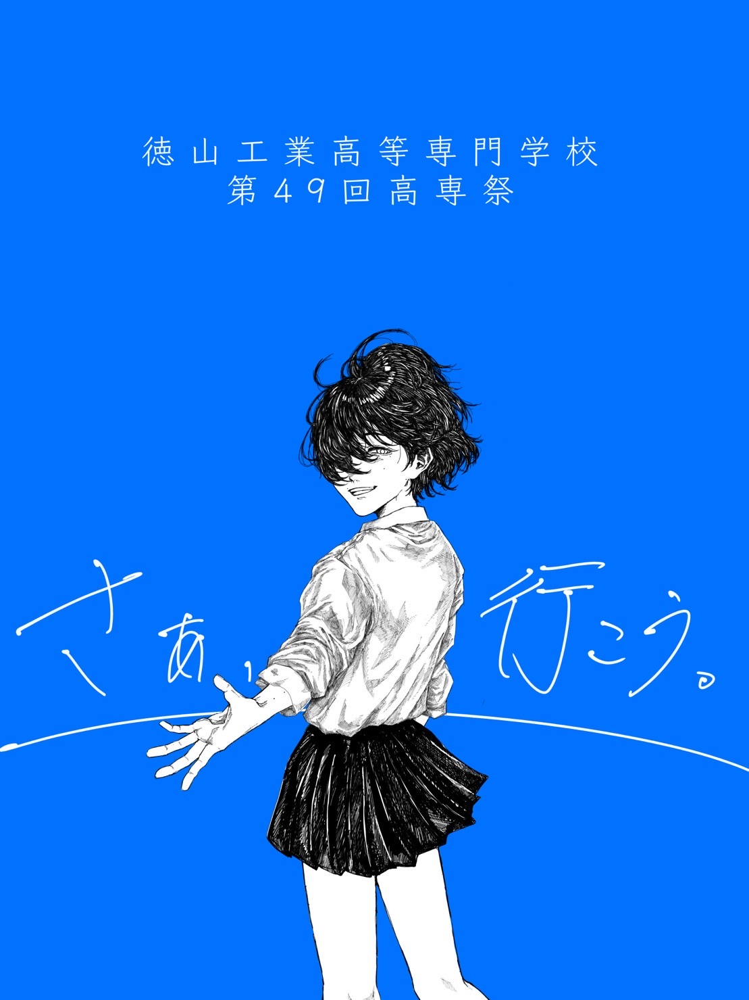

さぁ、行こう。
テーマの説明高専祭テーマ「for ∞」には高専祭には無限の可能性があるという強い思いが込められています。 このコロナ禍の状況を転換期と捉え、例年行っている各企画に加え、体験型の企画も多数開催しています。私たちの生み出す可能性を、思いを、感じていただけたら幸いです。
模擬店
テーマの説明高専祭テーマ「for ∞」には高専祭には無限の可能性があるという強い思いが込められています。 このコロナ禍の状況を転換期と捉え、例年行っている各企画に加え、体験型の企画も多数開催しています。私たちの生み出す可能性を、思いを、感じていただけたら幸いです。